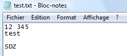
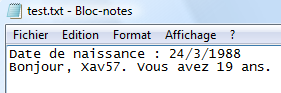
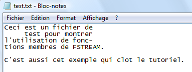

En naviguant sur divers sites, je me suis rendu compte que dans beaucoup de tutoriels et de cours censés être sur le C++, quand le chapitre sur les fichiers arrivait, la méthode donnée était en C et non en C++. De plus, leurs auteurs n'indiquent même pas que c'est du C !!
Ce n'est quand même pas si compliqué que cela, et je vais vous le prouver ! ;)
Dans ce tutoriel, je vais vous montrer comment agir sur deux types de fichiers en C++. Dans son big-tuto, M@teo21 le montre en C mais pas (encore) en C++. :D
En fait, c'est la traduction en C++ du chapitre 7 de la partie 2 du tuto de M@teo21, mais j'ai quand même rajouté des choses ^^ .
Afin d'ouvrir des fichiers, que ce soit en lecture ou en écriture, il faut utiliser la classe ifstream (Input File stream ;) ) pour la lecture et ofstream (Output File stream) pour l'écriture. Ces deux classes sont des dérivées de std::ios_base qui, comme son nom l'indique, est la classe de base pour les flux.
Pour pouvoir les utiliser, il faut inclure l'entête fstream.
Le début du code est donc :
#include <fstream>
using namespace std;
Ouverture en lecture : ifstream
Maintenant, il faut ouvrir le fichier. Pour ce faire, il faut un flux agissant sur le fichier.
Pour créer un flux, il nous faut un constructeur d'initialisation. Pour la lecture, il est de la forme ifstream flux;. Une fois le flux créé, il faut ouvrir le fichier.
Pour l'ouvrir, on a deux possibilités :
on utilise la fonction membre open qui prend deux paramètres : le premier est le nom du fichier à ouvrir, et le deuxième est le mode d'ouverture. Ça ressemble donc à flux.open("fichier.extension", mode_Ouverture); ;
on ne passe pas par la fonction membre open, on indique directement le fichier et le mode d'ouverture en même temps que la déclaration du constructeur d'initialisation. Ça ressemble donc à ifstream flux("fichier.extension", mode_Ouverture);.
Pour indiquer l'emplacement du fichier, on a plusieurs solutions :
le chemin absolu (= chemin complet, qui part de la racine du disque) qui est de la forme : "C:/Documents and Settings/login/Bureau/fichier.txt" ;
le chemin relatif (à partir de là où se trouve l'exécutable). Par exemple, "sousDossier/fichier.txt" si le fichier se trouve dans un sous-dossier du dossier de l'exécutable ;
si le fichier est dans le même répertoire que l'exécutable, il y a juste à indiquer le nom du fichier.
Moi, je suis sous Linux, je fais comment ?
Sous Linux, c'est : "/home/login/fichier.txt" qui est le chemin absolu. Le fonctionnement du chemin relatif est le même que pour Windows.
Les modes d'ouverture proviennent tous de la classe ios_base, ce qui explique que l'on fasse précéder leur nom du préfixe ios_base:: ou ios:: tout court. Comme on veut ouvrir en lecture, c'est ios::in (pour input).
Une fois le fichier ouvert, il faut vérifier que l'ouverture a bien fonctionné. Pour cela, il suffit de faire if(flux).
Une fois les opérations sur le fichier effectuées, il faut le fermer avec la fonction membre close() comme ceci : flux.close();.
Voici le code pour ouvrir et fermer le fichier test.txt qui se trouve dans le même répertoire que mon programme :
#include <iostream>
#include <fstream>
using namespace std;
int main()
{
ifstream fichier("test.txt", ios::in); // on ouvre le fichier en lecture
if(fichier) // si l'ouverture a réussi
{
// instructions
fichier.close(); // on ferme le fichier
}
else // sinon
cerr << "Impossible d'ouvrir le fichier !" << endl;
return 0;
}
Ouverture en écriture : ofstream
Pour ouvrir le fichier en écriture, il faut également un flux agissant le fichier. Pour l'ouverture, on peut utiliser soit la fonction open soit par la déclaration directe, qui, comme vous le savez, prennent deux paramètres : le nom du fichier ainsi que le mode d'ouverture.
Pour l'écriture, il y a différents modes d'ouverture, et si on ne fait pas attention, on peut perdre tout ce qu'il y a dans le fichier si celui-ci n'est pas vide.
Les modes d'ouverture sont :
ios::out (pour output) : spécifie qu'on ouvre le fichier en écriture. Obligatoire - mais par défaut - quand on utilise un objet ofstream ;
ios::app (pour append = ajouter à la suite) : lorsqu'on ouvre le fichier en écriture, on se trouve à la fin pour écrire des données à la suite du fichier (sans effacer le contenu, s'il y en a un). Avec ce mode d'ouverture, à chaque écriture, on est placé à la fin du fichier, même si on se déplace dans celui-ci avant (on verra comment se déplacer un peu plus tard ;) );
ios::trunc (pour truncate = tronquer) : lorsqu'on ouvre le fichier en écriture, spécifie qu'il doit être effacé s'il existe déjà, pour laisser un fichier vide ;
ios::ate (pour at end) : ouvre le fichier en écriture et positionne le curseur à la fin de celui-ci. La différence avec ios::app est que si on se repositionne dans le fichier, l'écriture ne se fera pas forcément à la fin du fichier, contrairement à ios::app.
Pour ces modes d'ouverture, si le fichier n'existe pas ou s'il n'est pas trouvé, il sera créé.
Pour spécifier plusieurs modes d'ouverture, on utilise l'opérateur "ou" : | (prononcé pipe en anglais). Sur un clavier, c'est la combinaison de touches Alt Gr et 6.
Voici le code qui ouvre en écriture le fichier test.txt, qui efface le contenu du fichier s'il n'est pas vide et qui le referme :
#include <iostream>
#include <fstream>
using namespace std;
int main()
{
ofstream fichier("test.txt", ios::out | ios::trunc); //déclaration du flux et ouverture du fichier
if(fichier) // si l'ouverture a réussi
{
// instructions
fichier.close(); // on referme le fichier
}
else // sinon
cerr << "Erreur à l'ouverture !" << endl;
return 0;
}
Ouverture en lecture ET en écriture : fstream
En utilisant fstream, on ouvre en lecture et en écriture un fichier. Le fonctionnement est le même que pour ifstream ou ofstream.
Le prototype pour utiliser cette méthode d'ouverture est : fstream flux("fichier.extention", ios::in | ios::out | [ios::trunc | ios::ate]);.
Pourquoi les crochets ?
C'est pour indiquer qu'il faut utiliser un des deux, en fonction de ce qu'on veut faire.
Avec ce mode d'ouverture, le fichier DOIT exister ! Le ios::in | ios::out est obligatoire pour bien spécifier que l'on ouvre le fichier en lecture ET en écriture. Comme le fichier est ouvert en écriture et qu'il existe déjà, il faut rajouter soit ios::ate pour ne pas effacer le contenu, soit ios::trunc pour l'effacer.
Si vous avez votre nom de fichier stocké dans une chaîne de caractères, et vous voulez que fichier.extension prenne cette valeur, comment faites-vous ? Si vous essayez de mettre à la place du nom de fichier le nom de votre chaîne, ça ne marche pas ! Pour le faire fonctionner, il faut rajouter .c_str() après le nom de la chaîne. Ce c_str() est une fonction membre de la librairie string qui va renvoyer un pointeur vers un tableau de caractères (comme en langage C ;) ). Voici un exemple :
#include <fstream>
#include <string>
using namespace std;
int main()
{
string mon_fichier = "test.txt"; // je stocke dans la chaîne mon_fichier le nom du fichier à ouvrir
ifstream fichier(mon_fichier.c_str(), ios::in);
if(fichier) // si l'ouverture a réussi
{
// instructions
fichier.close(); // je referme le fichier
}
else // sinon
cerr << "Erreur à l'ouverture !" << endl;
return 0;
}
Ce code ouvre en lecture le fichier test.txt.
Voilà, vous savez ouvrir un fichier texte avec différents modes, tester l'ouverture et fermer le fichier.
Alors, pour lire un fichier, il y a différentes méthodes qu'il faut employer en fonction de ce que l'on veut faire. Les voilà :
getline(flux, chaineDeCaractères) : pour lire une ligne complète ;
flux.get(caractère) : pour lire un caractère ;
flux >> variable : pour récupérer à partir du fichier jusqu'à un délimiteur (espace, saut à la ligne, ...).
Commençons par getline
Avec cette fonction, on peut lire et afficher à l'écran une ligne du fichier ou bien le fichier en entier en utilisant une boucle.
Cette fonction prend deux paramètres : le flux que l'on crée avec ifstream ou fstream. Le deuxième paramètre est la "cible" dans laquelle vous allez stocker le contenu lu dans le fichier. En général, c'est une chaîne de caractères (string ;) ). Il faut donc inclure l'entête #include <string>.
Voici le code qui ouvre le fichier test.txt en lecture, affiche la première ligne et referme le fichier :
#include <iostream>
#include <string>
#include <fstream>
using namespace std;
int main()
{
ifstream fichier("test.txt", ios::in); // on ouvre en lecture
if(fichier) // si l'ouverture a fonctionné
{
string contenu; // déclaration d'une chaîne qui contiendra la ligne lue
getline(fichier, contenu); // on met dans "contenu" la ligne
cout << contenu; // on affiche la ligne
fichier.close();
}
else
cerr << "Impossible d'ouvrir le fichier !" << endl;
return 0;
}
Pour lire et afficher le fichier en entier, il faut le lire ligne par ligne et afficher à chaque fois la ligne lue. On utilisera donc une boucle dont le contenu se répètera tant qu'il y a une ligne à lire. S'il n'y a plus de ligne, on sort de la boucle.
Dans le code précédent, il faut changer ce qu'il y a dans le if comme ceci :
if(fichier)
{
string ligne;
while(getline(fichier, ligne)) // tant que l'on peut mettre la ligne dans "contenu"
{
cout << ligne << endl; // on l'affiche
}
}
Il existe encore une surcharge de cette fonction qui prend en troisième paramètre un caractère de fin. getline va alors lire le fichier jusqu'à trouver ce caractère de fin. Par défaut, ce caractère est égal au retour à la ligne (' '), c'est pour cela qu'on peut lire ligne par ligne sans spécifier ce troisième paramètre. Celui-ci est facultatif.
Bien, on en a fini avec getline.
Continuons avec get
Cette fonction est utilisée pour lire un caractère, et un seul. Bien sûr, il est également possible d'afficher le texte en entier en utilisant une boucle.
La syntaxe de cette fonction est : flux.get(caractère);. Ceci lit un caractère du fichier et le stocke dans caractere qui est de type char.
Le code suivant ouvre un fichier en lecture, lit un caractère, l'affiche, et referme le fichier :
#include <iostream>
#include <fstream>
using namespace std;
int main()
{
ifstream fichier("test.txt", ios::in); // on ouvre
if(fichier)
{
char caractere; // notre variable où sera stocké le caractère
fichier.get(caractere); // on lit un caractère et on le stocke dans caractere
cout << caractere; // on l'affiche
fichier.close();
}
else
cerr << "Impossible d'ouvrir le fichier !" << endl;
return 0;
}
On en a fini avec get.
Terminons avec >>
Ce symbole ne devrait pas vous être inconnu : il est aussi utilisé pour cin. Le fonctionnement avec les fichiers est exactement le même. Cet opérateur lit dans le fichier jusqu'à ce qu'il trouve un délimiteur qui peut être un espace ou un retour à la ligne.
Après avoir lu le premier élément, si on réutilise cet opérateur, c'est l'élément suivant qui est lu jusqu'au prochain délimiteur.
Exemple : dans mon fichier test.txt il y a :

Comme vous le voyez, il y a deux entiers et deux chaînes de caractères. Si je veux récupérer chaque élément, il faut que je déclare deux int et deux string.
Voici le code qui stocke les différents éléments du fichier dans quatre variables différentes :
#include <iostream>
#include <string>
#include <fstream>
using namespace std;
int main()
{
ifstream fichier("test.txt", ios::in);
if(fichier)
{
int entier1, entier2;
string chaine1, chaine2;
fichier >> entier1 >> entier2 >> chaine1 >> chaine2; /*on lit jusqu'à l'espace et on stocke ce qui est lu dans la variable indiquée */
fichier.close();
}
else
cerr << "Impossible d'ouvrir le fichier !" << endl;
return 0;
}
Maintenant, entier1 vaut 12, entier2 vaut 345, chaine1 contient test et chaine2 contient SDZ.
Et on en a fini avec >> !
Bien, maintenant vous savez lire dans un fichier ! :D Alors passons à l'écriture !
Écrire dans un fichier
Pour l'écriture, nous allons voir deux méthodes, mais la première est largement plus utilisée :
flux <<élémentQuelconque : écrit dans le fichier un élément quelconque (string, int, ...) ;
flux.put(caractère) : écrit un seul caractère dans le fichier.
Tout d'abord <<
Ce symbole non plus ne devrait pas vous être inconnu : il est utilisé pour cout. Son fonctionnement pour les fichiers est exactement le même que pour l'affichage sur la sortie standard (l'écran ;) ). Cet opérateur permet d'écrire dans le fichier soit un caractère, soit une chaîne de caractères, soit des entiers, ...
Pour utiliser cet opérateur, la syntaxe est la suivante : flux << élément1 << élément2 << ... Comme vous le voyez, ce n'est pas très différent de cout ! :D
Voici un exemple de code qui écrit des données dans le fichier test.txt qui est effacé s'il n'est pas vide :
#include <iostream>
#include <string>
#include <fstream>
using namespace std;
int main()
{
ofstream fichier("test.txt", ios::out | ios::trunc); // ouverture en écriture avec effacement du fichier ouvert
if(fichier)
{
string nom = "Xav57";
int age = 19;
fichier << "Date de naissance : " << 24 << '/' << 3 << '/' << 1988 << endl;
fichier << "Bonjour, " << nom << ". Vous avez " << age << " ans.";
fichier.close();
}
else
cerr << "Impossible d'ouvrir le fichier !" << endl;
return 0;
}
Comme vous le voyez, j'ai écrit des chaînes de caractères, des caractères, des entiers, un retour à la ligne, des éléments sans type et ce, sans faire aucune distinction. Je l'ai aussi fait en deux fois.
Voici le résultat :

Passons à put
Comme je l'ai déjà dit, put est moins utilisé car << fait la même chose. La syntaxe est : flux.put(char). Cette fonction ne peut écrire qu'un caractère à la fois. C'est l'équivalent de get pour la lecture.
Voici juste la partie du code qui écrit un caractère :
if(fichier)
{
char car = 'S';
fichier.put(car);
// équivalent à "fichier.put('S')" ou encore "fichier << car" ou bien "fichier << 'S'"
}
Voilà, vous savez presque tout. Il ne reste plus qu'à voir le placement et le déplacement dans un fichier.
Tout comme en C, il existe une notion de curseur pour le placement dans le fichier. Maintenant, pour bien pouvoir utiliser ces fonctions, il faut bien connaître le fichier. Comme l'a dit M@teo21 :
Citation : M@teo21
Mais comment je sais à quelle position je dois aller lire et écrire dans le fichier ?
Alors ça, c'est vous qui gérez. ;) Si c'est un fichier que vous avez vous-mêmes écrit, vous savez comment il est construit. Vous savez donc où aller chercher vos informations (par exemple les meilleurs scores sont en position 0, les noms des derniers joueurs sont en position 50, etc.).
Savoir où on est
Pour connaître la position courante, ça dépend de la manière dont il a été ouvert.
S'il est ouvert avec ifstream
Il y a la méthode tellg().
S'il est ouvert avec ofstream
La méthode porte presque le même nom, il n'y a qu'une seule lettre qui change. C'est la méthode tellp().
Ces deux méthodes renvoient la position courante dans le fichier (le numéro de l'octet courant depuis le début du fichier).
La syntaxe en C++ de tellg ou de tellp est : flux.tell[g | p]().
Se déplacer
Pour se placer à une position précise dans le fichier, ça dépend, tout comme pour connaître sa position, du mode d'ouverture.
S'il est ouvert avec ifstream
Il y a la méthode seekg. Elle prend deux arguments : le premier est le numéro de l'octet où se placer, et le second l'endroit du fichier à partir duquel se situe ce numéro. Cette seconde valeur peut être égale à :
ios::beg (octet indiqué depuis le début du fichier) ;
ios::cur (octet indiqué depuis la position courante dans le fichier) ;
ios::end (octet indiqué depuis la fin du fichier).
Par défaut, ce second argument est égal à ios::beg.
S'il est ouvert avec ofstream
Ici encore, la méthode porte presque le même nom. Il s'agit de la méthode seekp, et son fonctionnement est identique à celui de seekg.
En C++, ça donne : fichier.seek[g | p](10, ios::beg). Ce code va à l'octet 10 depuis le début du fichier.
Si on est au dixième octet, est-on au dixième caractère ?
Pas forcément. Cela dépend du codage utilisé (ASCII, UTF, ...). De plus, les caractères spéciaux comme le retour à la ligne sont souvent codés sur 2 octets. Mais pas d'inquiétude : dans la prochaine partie, je vous montrerai une astuce pour aller à la n-ième ligne ou au n-ième caractère.
Pour terminer ce tuto, je vais vous présenter quelques fonctions membres de fstream. Les fonctions que j'ai choisies sont (je trouve) les plus pratiques et les plus utilisées.
Voici les prototypes de ces fonctions :
flux.eof() pour savoir si le "curseur virtuel" (comme dit M@teo21) a atteint la fin du fichier ;
flux.ignore(nbCaractere, caractereDeFin) pour ignorer nbCaractere lu OU ignorer tout jusqu'à ce que caractereDeFin est rencontré ;
flux.clear() pour remettre les flags d'état à leur état d'origine ;
flux.fail() pour tester si l'ouverture du flux s'est bien déroulée. Très utile pour vérifier qu'un fichier existe ;) .
Un flag ? Jamais entendu...
Un flag (drapeau en français) est un bit qui peut prendre 2 valeurs : 0 ou 1. Pour fstream, il existe 4 flags : goodbit, eofbit, failbit et badbit. Nous ne verrons que eofbit et failbit dans ce tuto.
Les fonctions membres
Voyons ces fonctions dans l'ordre.
Tout d'abord flux.eof()
Cette fonction renvoie un booléen qui vérifie l'état de eofbit qui vaut true si la fin du fichier a été atteinte et false sinon.
Ce eofbit peut passer à true soit parce qu'il n'y a plus de données à lire, soit parce qu'on ne peut plus en écrire.
Continuons par flux.ignore(nbCaractere, caractereDeFin)
Cette fonction demande deux paramètres : le nombre de caractères à ignorer et un caractère de fin. Elle ignore donc les nbCaractere jusqu'à trouver le caractereDeFin. Cette fonction est souvent utilisée pour compter les lignes dans un fichier.
Si on ne connait pas le nombre de caractères dans les lignes, il y a une petite astuce. Pour utiliser cette astuce, il faut inclure :
#include <limits>
using namespace std;
Ensuite, à la place du nbCaractere, on met numeric_limits<int>::max(). Cette méthode va renvoyer la valeur maximale que peut prendre un int. Pour la connaître, on peut faire un cout dessus. Cette façon de faire fonctionne, car je ne pense pas que quelqu'un va mettre autant de caractères sur une seule ligne (sur ma machine, la valeur de numeric_limits<int>::max() est 2147483647).
La syntaxe de cette fonction devient alors : flux.ignore(numeric_limits<int>::max(), ' ').
Voyons maintenant
flux.clear()
La fonction membre clear remet à leur état d'origine les 4 flags de fstream.
C'est très utilisé quand on a atteint la fin du fichier (donc eofbit est passé à true) et si on veut se replacer au début du fichier. Si on n'utilise pas cette fonction, le flag eofbit reste à true, on ne peut donc pas revenir au début.
Terminons avec flux.fail()
Cette fonction membre réalise le test des bits failbit et badbit. Si le résultat est false, cela veut dire que le flux a bien été créé et ouvert. Cela nous rassure donc quant à l'existence du fichier.
Un dernier exemple utilisant ces fonctions membres
Dans le dernier exemple du tuto, je vais utiliser les 3 fonctions membres que l'on vient de voir en faisant diverses opérations. Avec cet exemple, vous devriez tout comprendre ! :D
Voici le contenu du fichier test.txt avec lequel je vais travailler :

#include <iostream>
#include <fstream>
#include <string>
#include <limits> // pour utiliser numeric_limits<int>::max()
using namespace std;
int main()
{
string toto = "toto.txt";
ifstream fichier_toto(toto.c_str(), ios::in);
if(fichier_toto.fail())
cout << "Le fichier " << toto << " n'existe pas !" << endl;
ifstream fichier("test.txt", ios::in);
if(!fichier.fail())
{
cout << "Le fichier existe bien et est correctement ouvert !" << endl;
cout << "A l'ouverture du fichier, le curseur de trouve a l'octet " << fichier.tellg() << "." << endl << endl;
cout << "Le fichier contient : " << endl << endl;
string ligne;
while(getline(fichier, ligne))
cout << ligne << endl;
cout << endl << "Une fois tout le fichier lu, le \"eofbit\" est passe a " << boolalpha << fichier.eof() << "." << endl;
/* boolalpha sert à afficher en toutes lettres un booléen */
cout << endl << "Pour revenir au debut du fichier, on peut tenter un \"fichier.seekg(0, ios::beg\". Est-ce que ca a fonctionne ?" << endl;
fichier.seekg(0, ios::beg);
cout << endl << "On se trouve au " << fichier.tellg() << "ieme octet." << endl;
if((int)fichier.tellg() != 0)
{
cout << "Oh non, ca n'a pas fonctionne ! Je vais tenter de faire un \"fichier.clear()\"." << endl;
fichier.clear();
fichier.seekg(0, ios::beg);
cout << endl << "On se trouve au " << fichier.tellg() << "ieme octet." << endl;
}
int nbLignes = 0;
while(fichier.ignore(numeric_limits<int>::max(), '\n'))
nbLignes++;
cout << "Le fichier contient " << nbLignes << " lignes." << endl;
cout << "Comme on a parcouru a nouveau le fichier, le \"eofbit\" est passe a " << boolalpha << fichier.eof() << "." << endl;
fichier.close();
}
else
cerr << "Impossible d'ouvrir le fichier !" << endl;
return 0;
}
Bien, vous êtes arrivés au terme de ce long tutoriel. BRAVO ! :D
Si vous voulez manipuler autrement les fichiers mais également les dossiers, je vous conseille de regarder au niveau de la bibliothèque Boost, qui est portable, et plus particulièrement Boost.FileSystem.
Mais bon, ce n'était pas si dur que ça. Si vous avez lu la partie sur les fichiers en C dans le tuto de M@teo21, vous pouvez comparer. Personnellement, je trouve que c'est plus simple de le faire en C++, mais là, chacun ses choix !
Si une chose ne vous semble pas claire, ou si vous voulez voir apparaître une autre fonction membre de fstream qui vous semble importante et utile, contactez-moi !